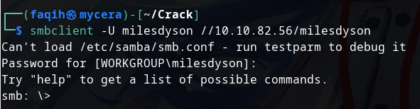
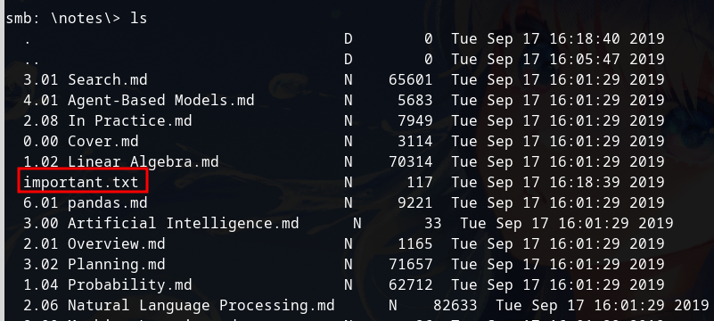
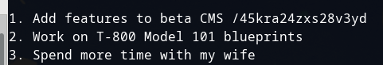
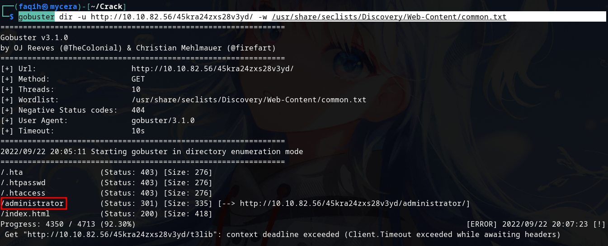

Use password acquired to use milesdyson groupname and user.
smbclient -U milesdyson //10.10.82.56/milesdyson

cd notes then ls. We can see important.txt file

Type more important.txt, we can see hidden directory

gobuster dir -u http://10.10.82.56/45kra24zxs28v3yd/ -w /usr/share/seclists/Discovery/Web-Content/common.txt
As we can see we have administrator page
